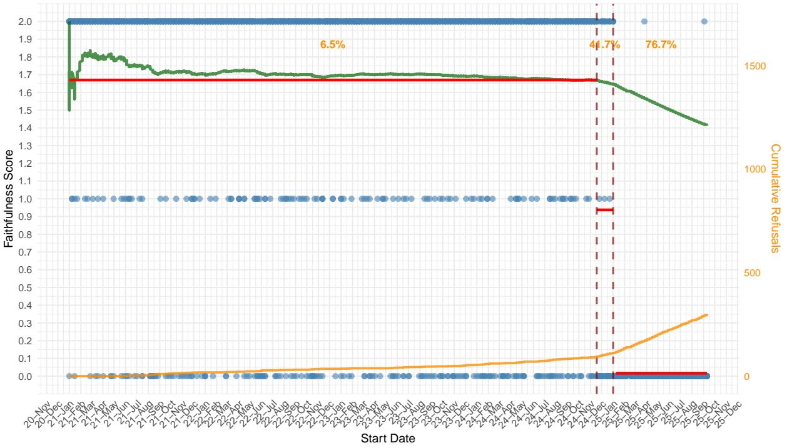
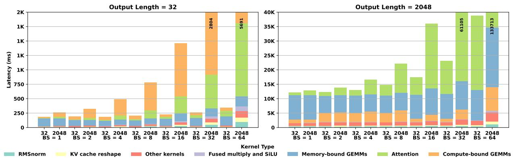

微观深度解读
为您精选了 6 篇高质量 AI 论文的深度解析
#1
幻觉检测
大型语言模型
虚假信息
一致性检查
CONFACTCHECK
简介：本文提出了CONFACTCHECK，一种高效的幻觉检测方法，旨在解决大型语言模型（LLM）生成文本时的虚假信息问题。该方法通过检查生成文本中的一致性和概率分布，无需外部知识库或模型权重，显著降低了API调用次数和计算成本，同时在多个数据集上实现了更高的准确性。CONFACTCHECK为在受限环境中检测幻觉提供了有效解决方案。

#2
大型语言模型
知识截止日期
时间敏感问题
基准测试框架
信息混淆
简介：本文提出了LLMLagBench，一个系统化的基准测试框架，旨在识别大型语言模型（LLMs）的知识截止日期。通过构建时间敏感问题集并评估模型在回答近期事件时的表现，LLMLagBench有效揭示了LLMs在处理时间敏感信息时的局限性，尤其是知识过时和信息混淆的问题。实验结果显示，模型的实际截止日期往往与官方声明不符，并存在多个部分截止点。

#3
芯粒
存内计算
大型语言模型
CXL集成
内存瓶颈
简介：本文提出了一种名为Sangam的基于芯粒的存内计算（PIM）架构，旨在解决大型语言模型推理中的内存瓶颈问题。通过将逻辑和内存解耦，并集成先进的处理组件，Sangam显著提升了查询延迟和解码吞吐量，分别实现了最高3.93倍和10.3倍的加速，同时降低了能耗，展示了其在LLM推理中的优越性能。

#4
命名实体识别
推理机制
ReasoningNER框架
零样本学习
低资源场景
简介：本文提出了ReasoningNER框架，通过显式推理机制提升命名实体识别（NER）性能。该方法包括推理链生成、调优和增强三个阶段，解决了现有模型在零样本和低资源场景下的局限性。实验结果显示，ReasoningNER在多个基准测试中实现了最先进的性能，尤其在复杂和未见语言的任务中表现优异。

#5
细粒度实体识别
多管理者专家检索增强生成
领域适应性
检索效率
对话系统
简介：本文提出了MME-RAG框架，通过将细粒度实体识别分解为管理者的类型判断和专家的边界提取两个阶段，解决了大语言模型在领域适应性和检索效率上的挑战。该框架结合KeyInfo驱动的检索机制，显著提高了多领域对话中的实体识别准确性和可控性，实验结果表明其在多个数据集上优于现有基线模型。

#6
KV缓存分配机制
大型语言模型推理
推测解码
内存分配
计算效率
简介：本文提出了一种新颖的KV缓存分配机制——BMC（Balancing Memory and Computation），旨在解决大型语言模型推理中的效率瓶颈。BMC通过每隔r次迭代分配KV缓存，减少内存分配和复制开销，同时利用冗余计算提高推理速度。实验表明，BMC在CPU和GPU上均实现了高达3.2倍的吞吐量提升，并与推测解码结合时进一步加速，展示了其广泛的适用性和优越性。